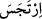

Üzerinde, tek amaçları onu yemek olan köpekler vardır,
Eğer ondan uzak durursan, o köpeklerden kurtulursun,
Onu kendine çekersen köpekleriyle dalaşırsın.
Bir hadiste şöyle buyurulmuştur: “Allah, Davud (a.s.)’a şöyle vahyetti: Ey Davud!
Dünya, üzerine köpeklerin üşüşüp sağa sola çekiştirdikleri kokuşmuş bir leşe benzer.
Sen de onlar gibi bir köpek olup onlarla birlikte çekiştirmek ister misin?”[176]
Hâfız der ki:
Senin gibi devlet kuşu ne zamana dek kemik hırsına düşecek?
Ehil olmayanların üzerine saldığın devlet gölgesine yazık!
“Akıtılmış kan”, Uğruna kan akıtılan şehvet ve lezzetlerdir. “Domuz eti”, şeytanın
işlerinden olan bütün pisliklerdir. Nitekim ayette şöyle buyurulmuştur: “Şarap, kumar,
dikili taşlar (putlar), (üzerine yazılar yazılmış) şans okları (çekmek ve bunlara göre
hareket etmek), şeytan işi birer pisliktir. ” (el-Maide, 5/90)
Pisliğin hakikati, Hakk’ın yolundan sapmak ve uzaklaşmaktır. Nitekim bir haberde
şöyle varid olmuştur: Rasûlullah (s.a.) dünyaya geldiği vakit Kisra’nın sarayındaki
sütunlar sarsıldı. Yani saray tam bir sarsıntı ile sallandı ve ses duyuldu. Bu haberde “
” den türeyen “sarsıldı” mânâsındaki “
” fiili kullanılmıştır. Pislik “rics”,
seni Hak’dan uzaklaştıran şeydir.
“Allah’dan başkası adına kesilmiş fısk yani hayvan”, Hak’dan başkasının peşine
düşerek Hakk’ı taleb etmekten vazgeçmektir.
Sa’dî der ki:
Evliyanın Allah’tan, gayrısını
Temenni etmesi tarikata aykırıdır.
Böyle şeylere teşebbüs etmek, haramdır. Çünkü bunlar seni Allah’tan ve O’na
yaklaşmaktan mahrum bırakır. Ancak insânî ihtiyaçları giderecek kadarı bunun
dışındadır. Çünkü, zarûretler yasakları mubah kılar.
Rasûlullah (s.a.)’in “Mead b. Adnan gibi ve sert (kavî) olunuz.”[177] hadîsini bazıları
şöyle izah etmiştir: Mead b. Adnan’a tâbi olup onun gibi gibi sert ve kaba elbiseler
giyiniz. Yalın ayak yürüyünüz. Bu ifade, insanı tevazua teşvik ve dünyâ refahı ve
nimetlere fazlaca dalmaktan nehydir. Nitekim Efendimiz (a.s.) şöyle buyurmuştur:
“Bolluk içinde olmaktan sakınınız. Çünkü Allah’ın has kulları bolluk içinde
değillerdir.”[178]
Dünyânın naz ve nimetine gönül koyma,
Çünkü sonradan bunlardan gönlü kurtarmak zor iştir.